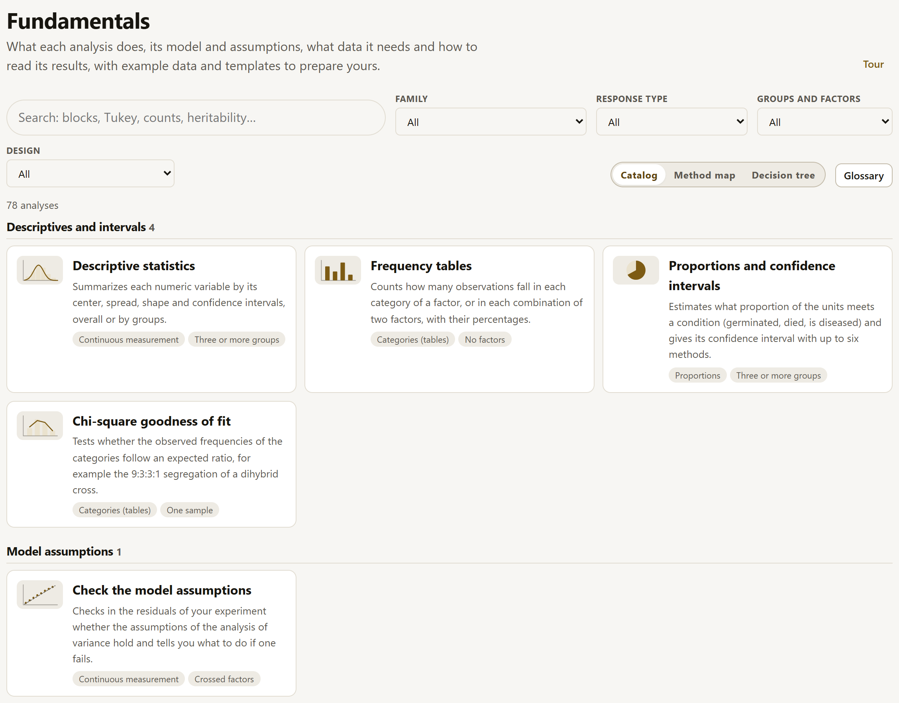
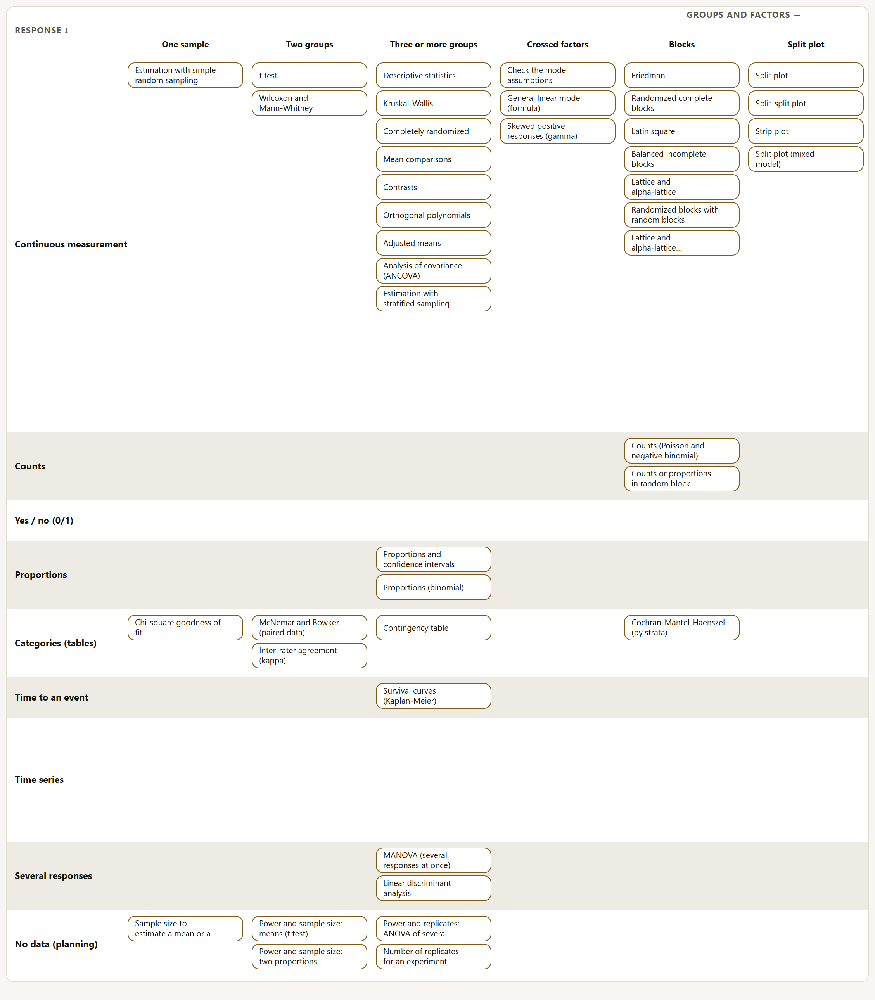
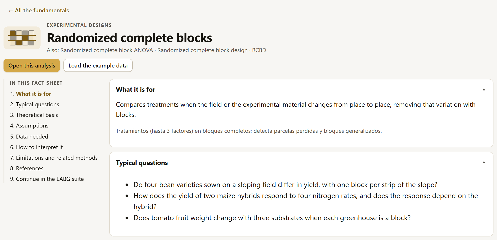
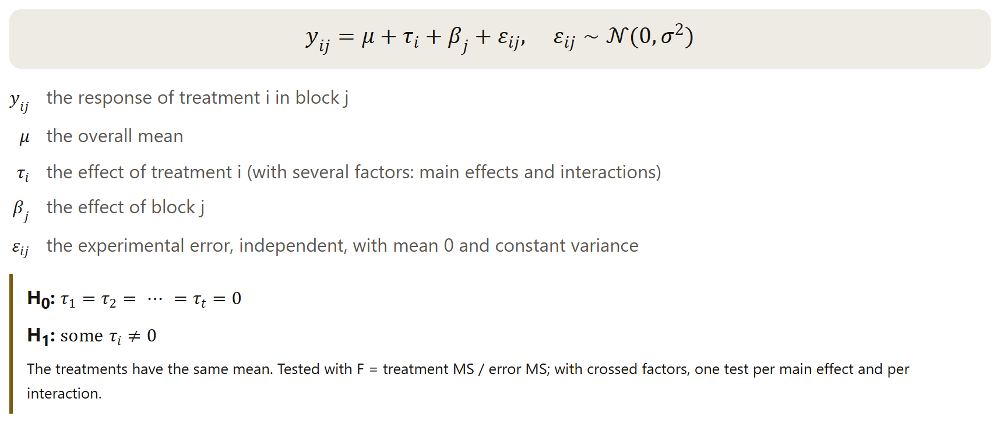
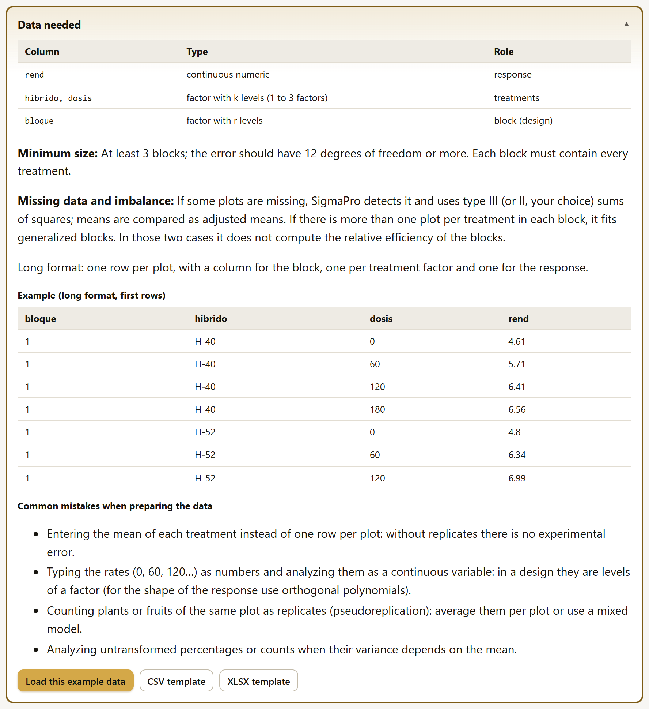

Fundamentals: what each analysis does and what data it needs
Each of SigmaPro’s 78 analyses has a fact sheet: what it is for, the model and its hypotheses, the assumptions and how to check them in the app, the data it needs, how to read the result, its limits and where it comes from. This chapter explains how to reach the fact sheets, how to search them and what each one contains.
- 9.1Three ways to reach a fact sheet
- 9.2The catalog and its filters
- 9.3The method map and the decision tree
- 9.4A fact sheet, section by section
- 9.5Data needed and the templates
- 9.6Formulas, language and offline use
- 9.7How the fact sheets were reviewed
9.1Three ways to reach a fact sheet
The fact sheets live in block 9, but they are one click away from where you need them: when you choose what to analyze, when you have a result in front of you and when you are getting started.
| From | How |
|---|---|
| The block bar | Fundamentals opens the catalog of the 78 fact sheets, with its search box and its filters (9.2). |
| An analysis | In the catalog of the Analysis block, each analysis carries the ⓘ icon (What is this analysis?); with an analysis open, the ⓘ What is this analysis? button is in the header of its result, also in the four summaries of the Explore block. Both open its fact sheet. |
| The Home block | The What you can analyze card lists the 78 analyses by family; each name opens its fact sheet. |
From the fact sheet you go back to work with Open this analysis, which opens the method in the Analysis block (or, for descriptives, frequencies, proportions and goodness of fit, in the Explore block), and with Load the example data, which also loads the fact sheet’s example dataset and fills in the form with its columns. That way, every fact sheet can be checked with one click.
9.2The catalog and its filters
The catalog groups the fact sheets by family, like the catalog of the Analysis block. Each card says what the analysis is for and carries two tags: the type of response it measures and how its groups or factors are organized.
| Control | What it does |
|---|---|
| Search | Searches the name, the summary, the family, the “what it is for” and the other names of each analysis (for example, “RCBD”, “Tukey”, “heritability”). If you type several words, all of them must appear; it ignores accents and capitalization. |
| Family | The 18 families: the 17 of the Analysis block and Descriptives and intervals, the family of the four summaries in Explore. |
| Response type | Continuous measurement, counts, yes / no (0/1), proportions, categories (tables), time to an event, time series, several responses or no data (planning). |
| Groups and factors | One sample, two groups, three or more groups, crossed factors, blocks, split plot, continuous predictors, random effects, several environments or no factors. |
| Design | The experimental design in which it is used: completely randomized, randomized complete blocks, Latin square, split plots and strips, lattice, incomplete blocks, repeated measures, several environments, sampling, response surfaces or no experimental design. |
| Glossary | Opens the glossary (also with Ctrl G): the statistics and concepts the fact sheets use, each with its definition and “See it in action” (section I.6). |
The filters combine, and the count at the top says how many analyses remain; if none qualifies, Clear the filters resets them to All. At the foot of some families, the Related tools strip shows the LABG suite apps that continue that work (chapter 10). Fundamentals is also shown in full in the bar’s Focused mode (section I.6): the catalog, the map, the tree and each fact sheet have their own guide.

9.3The method map and the decision tree
Method map shows the same analyses in a table: the type of response in the rows and the structure of the groups and factors in the columns. It helps you find the analysis starting from the question: “I measure counts in blocks”, “I compare two groups with a yes / no response”.

Each name is a link to its fact sheet: it opens with a click or with the keyboard (Tab and Enter). The catalog filters also apply to the map, and the map remembers the chosen view while the tab stays open. On narrow screens, the table scrolls sideways inside its frame.
The decision tree
Decision tree takes you from the research question to the analysis through a few questions in field language, without data (figure 9.3). The first column asks what you want to do with the data: describe them, compare treatments, relate numeric variables, associate categories, compare genotypes across several environments, estimate genetic variances, analyze the time to an event, a time series or several responses at once, estimate from a sample or plan a trial. Each answer opens the next question on the right (what did you measure?, how was the trial laid out?, what shape does the relationship have?), and a gold line joins each answer to its question.
![The decision tree: the explanation, the view selector with Decision tree selected and the Glossary button; Your path: Compare treatments or groups, A continuous measurement, In complete blocks, and Start over; four columns joined by gold lines, with their first answers: What do you want to do with your data?, What did you measure? and How was the trial laid out?, with the chosen answer in gold; and The analyses for “In complete blocks”: Randomized complete blocks and Randomized blocks with random blocks, from the R engine, each with when to use it, what it is for and the Fact sheet, Open this analysis and Try with the example buttons](../img/en/b9-arbol.png)
The last column shows the analyses that fit, each with when to use it and what it is for, and three buttons: Fact sheet, Open this analysis and, if its fact sheet has an example, Try with the example, which loads the example data and computes it. Every one of the 78 analyses is in some leaf; the sample size and power analyses open without data. Start over goes back to the first question, and the path is remembered while the tab stays open. The tree has no search box or filters; on a narrow screen, the columns are stacked one below the other.
You can also reach the tree from the third path of Home (section 1.1) and from the assistant’s recommendation: See it in the decision tree opens it on the path of that analysis, with the analysis highlighted (section 4.2).
9.4A fact sheet, section by section
All fact sheets have the same nine sections, in the same order, and an index on the left to jump between them, which marks the one you are reading. Each section folds or unfolds with a click on its title.

| # | Section | What it contains |
|---|---|---|
| 1 | What it is for | In one sentence, what question it answers; the other names it is known by and its family. |
| 2 | Typical questions | Two or three agronomic or biological questions that the analysis answers. |
| 3 | Theoretical basis | The idea of the method in 150 to 300 words, the model with its terms explained, the hypotheses H₀ and H₁ and the statistic that tests them. |
| 4 | Assumptions | Each assumption, how it is checked in SigmaPro (the traffic light, Check the model assumptions, a plot) and what to do if it does not hold, with buttons that open the check or the alternative. |
| 5 | Data needed | The gold box of section 9.5. |
| 6 | How to interpret it | What to look at in the result and in what order, a sample write-up for the thesis or the paper, and the guides for reading each statistic. |
| 7 | Limitations and related methods | When not to use it and which SigmaPro analysis to use instead, with links to their fact sheets. |
| 8 | References | 3 to 5 references in APA format: the original paper or book and the reference texts. |
| 9 | Continue in the LABG suite | The suite apps that carry on the work of that analysis, with the reason (chapter 10). If none applies, it says so. |
The theoretical basis ends with the model, each of its terms and the hypotheses being tested, with the statistic that decides them (figure 9.5).

The sample write-ups in each fact sheet use the figures the app gives with its example dataset; when the fact sheet has none, the figures are presented as illustrative. Before copying them, replace the figures with those of your own result.
9.5Data needed and the templates
Section 5 sits in a gold box because it answers the question that most often holds up an analysis: how should my data be laid out? It has six parts (figure 9.6).

- Columns it needs: each column with its type (continuous numeric, factor with k levels, count, 0/1, date) and its role in the analysis (response, treatments, block…). The names are those of the example dataset.
- Minimum size: what the method needs to run and what is advisable for the test to make sense.
- Missing data and imbalance: what SigmaPro does if a value is missing or the groups are not the same size.
- Format: almost always long (one row per plot, plant or date). When the wide format is a common source of confusion, the fact sheet shows the same data in wide format, marked “not like this”; the Data block converts them to long with Wide ⇄ long (section 2.11).
- Example: the first actual rows of the example dataset, up to 8.
- Common mistakes when preparing the data: those that make the analysis run but answer a different question (averages instead of plots, numeric doses treated as if they were continuous, the fruits of one plot as replicates).
CSV template and XLSX template download the fact sheet’s example table (plantilla-<análisis>.csv or .xlsx) so that you can fill it in with your own data and then import it in the Data block. Load this example data loads the complete dataset and opens the analysis with its columns already chosen. The planning fact sheets (power, number of replicates, sample size and response-surface design) use no data: instead, their table of columns lists the values the form asks for.
9.6Formulas, language and offline use
The formulas in the fact sheets are mathematical text, not images: they can be read by a screen reader, enlarged without losing sharpness and copied.
SigmaPro writes them with its own converter to MathML, the formula language that browsers understand, without downloading any library. Each fact sheet is in Spanish and in English, with the same figures in both; you switch with the ES · EN selector like the rest of the app, and in English the notation follows the convention of that language (SE, SS and MS instead of EE, SC and CM).
The 78 fact sheets are app files (data/fundamentos/) that are loaded when they are opened. They work when you double-click index.html, in the published version and offline: the installed app stores them along with everything else. They also make up the methodological appendix of the exported report (section 7.2).
9.7How the fact sheets were reviewed
A fact sheet that describes something the app does not do is worse than no fact sheet at all. That is why each one was checked against the code and against the running app, in six independent reviews of 13 fact sheets each.
Each review checked the model, the hypotheses, the assumptions (and that the check and the alternative it proposes exist), the data and the example table, that the example runs and gives the figures in the write-up, the interpretation and the references (author, year, title, journal, pages and DOI). Of the 78 fact sheets, 49 changed in the review. Along the way, 18 errors in the app itself also turned up, from a calculation (weighted kappa when a rater does not use some category) to labels and messages; they were fixed, and the calculation errors have their new test case against R. The details are in docs/revision-fundamentos.md, and the list of analyses with the status of their fact sheet, in docs/inventario-analisis.md.
In addition, an automated test (node tests/fundamentos.mjs, part of the release battery of chapter 8) checks in every version that each analysis has its fact sheet with the nine sections in both languages, that the examples run, that the formulas convert and that no fact sheet names an option or a column that does not exist.